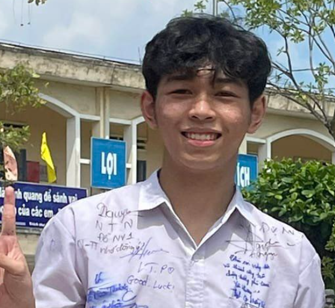

Chào mừng đến với Web của Đạt
Tôi là Đạt, một người đam mê lập trình và luôn khát khao khám phá những công nghệ mới. Với tinh thần học hỏi không ngừng, tôi đã thực hiện nhiều dự án khác nhau từ thiết kế web cho đến phát triển ứng dụng. Sự kiên nhẫn và sự tỉ mỉ là những yếu tố quan trọng giúp tôi vượt qua mọi thử thách trong quá trình phát triển sản phẩm. Tôi tin rằng, với đam mê và quyết tâm, không có điều gì là không thể đạt được.
My avatar
MY name is Dat
Tôi là một người đam mê lập trình, luôn khao khát khám phá và học hỏi những công nghệ mới. Với kinh nghiệm trong việc xây dựng các dự án từ nhỏ đến lớn, tôi luôn không ngừng nỗ lực để cải thiện kỹ năng và mang lại giá trị cho mọi người thông qua các sản phẩm của mình. Sự sáng tạo và tính cẩn thận là hai yếu tố quan trọng giúp tôi đạt được thành công trong từng dự án mà tôi tham gia.
Dự án đã làm
Các dự án mà tôi đã từng làm đây chỉ là 1 số ít nổi bật để bạn tham khảo